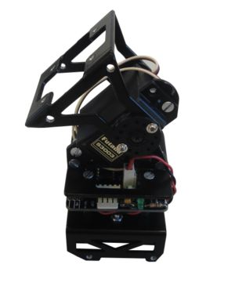
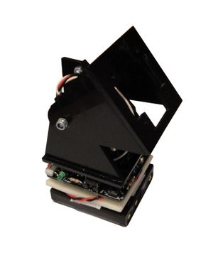
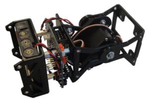
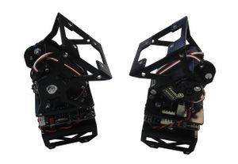
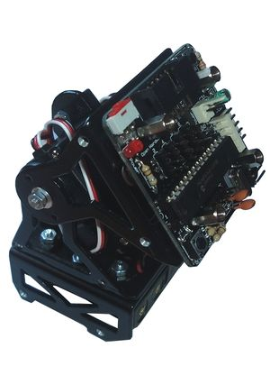
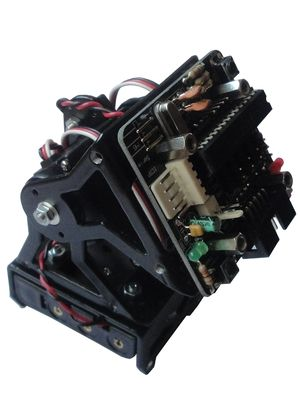

Contenido
[ocultar]Introducción
Unimod es el módulo mínimo capaz de oscilar de manera autónoma. Está formado por un módulo (Tipo Y1 ó MY1), una tarjeta Skycube y 4 pilas AAA. A partir de unimod se construyen robots modulares de mayor tamaño, anadiéndole más módulos u otros Unimods.
Vídeos
| 300|250</youtube>
Enlace directo al vídeo en Youtube |
300|250</youtube>
Enlace directo al vídeo en Youtube |
| 300|250</youtube>
Enlace directo al vídeo en Youtube |
Fotos
| Álbum de fotos |
|  Unimod A1, en posición vertical |
 Unimod hecho con un módulo Y1 |
|  Unimod A1 en posición horizontal |
 Dos Unimods A1 |


Tipos de Unimod
Se pueden construir 4 tipos de Unimods dependiendo de donde se coloque la tarjeta Skycube y de la orientación del módulo
- Unimod A1: Electrónica en la parte inferior. Robots del tipo Cabeceo-Cabeceo
- Unimod A2: Electrónica en la parte superior. Robots del tipo Cabeceo-Cabeceo
- Unimod B1: Electrónica en la parte inferior. Robots del tipo Cabeceo-viraje
- Unimod B2: Electrónica en la parte superior. Robots del tipo Cabeceo-viraje
| Unimod A1 |
 Unimod A2
|
 Unimod B1 |
 Unimod B2 |


Montaje
Software
Para la programación de Unimod se utiliza el software de micro-osciladores. Para probar Unimod, descargar el firmware test-oscillator8.hex
| micro_osciladores_0.3.zip | Fuentes. Micro-osciladores 0.3 |
| test-oscillator8.hex | Ejecutable. Ejemplo de oscilación de 8 servos. Pruebas para Unimod |
Licencia
| |
| Este proyecto tiene una licencia libre. Se permite expresamente su copia, modificación, distribuición y fabricación siempre que se reconozca a los autores y se comparta el proyecto bajo la misma licencia.
Descarga de Responsabilidad. Los autores no se hacen responsables en ningún caso de los posibles daños o pérdidas de garantía que pueda ocasionar el uso, debido o indebido de la información contenida en este proyecto. |
Autores
Enlaces
- Módulos MY1
- Módulos Y1
- Tarjeta Skycube
- Taller de robots modulares
- Robot modular Minicube-I
- Software de Micro-osciladores
Noticias
- 04/Abril/2010: Primera versión de esta página terminada
- 26/Mar/2010: Añadidos vídeos de youtube: descarga de firmware y oscilación de dos unimods
- 24/Feb/2010: Comenzada esta página